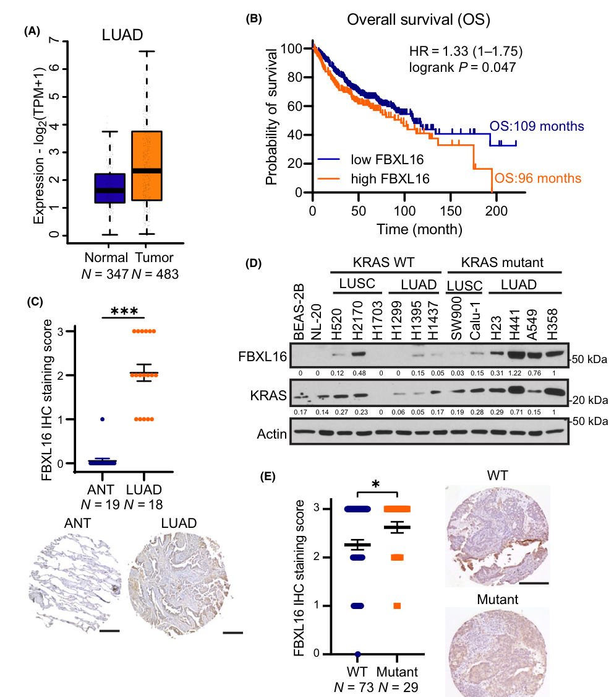
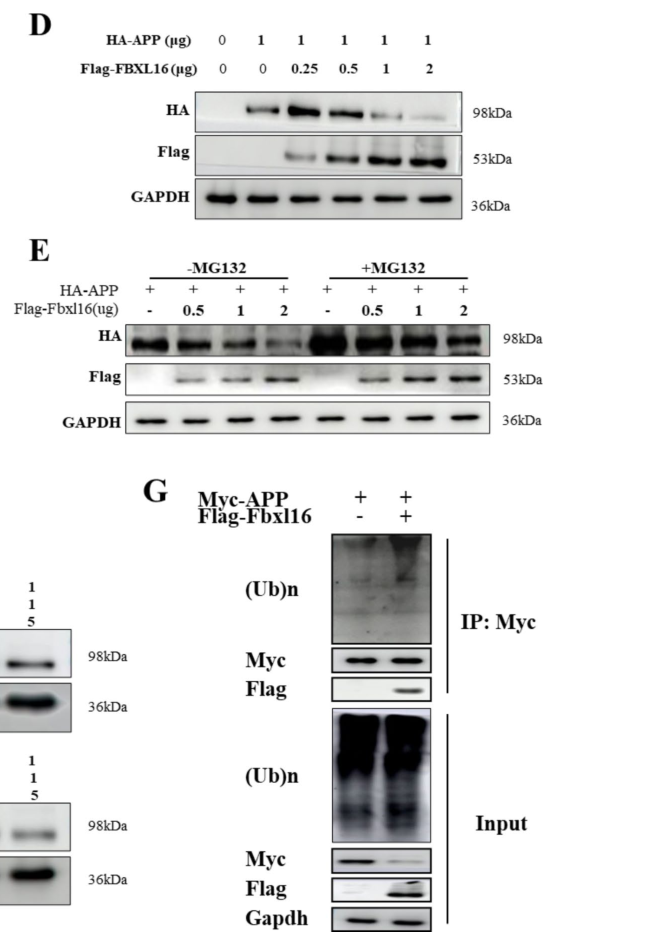

FBXL16 (F-box/LRR-repeat protein 16, C16orf22) is a member of the FBXL subfamily of F-box proteins, with an N-terminal (proline-rich/disordered) region, an F-box domain, and a C-terminal leucine-rich repeat (LRR) array. Its F-box motif mediates SKP1 binding, but unlike canonical F-box proteins FBXL16 shows no detectable CUL1 interaction in reported assays, suggesting it may act non-canonically rather than as a conventional SCF (SKP1-CUL1-F-box) substrate receptor. FBXL16 is a context-dependent regulator of protein stability acting in the cytoplasm, with two opposing modes: it promotes ubiquitination-dependent proteasomal degradation of some clients (e.g. the transcription factor HIF1alpha, where it limits HIF1alpha-driven epithelial-mesenchymal transition and angiogenesis as a tumor suppressor in triple-negative breast cancer, and the amyloid precursor protein APP, where neuronal/hippocampal FBXL16 reduces APP and improves cognition in Alzheimer's disease models), but it stabilizes other signaling regulators by decreasing their ubiquitination or antagonizing other ligases (e.g. IRS1, sustaining IGF1/IRS1/AKT signaling and sotorasib resistance in KRAS-mutant lung adenocarcinoma; and estrogen receptor alpha (ERalpha), c-MYC, SRC-3 and beta-catenin in ER-positive breast cancer, where it antagonizes FBXO45-mediated ERalpha degradation). Both the F-box and LRR domains are required for its substrate effects. It is expressed most highly in brain.
Definition: A molecular function or process by which a protein increases the stability/half-life of a target protein by preventing or antagonizing its ubiquitination and consequent proteasomal degradation (e.g. by competing with or inhibiting a ubiquitin ligase). Proposed to capture the stabilizing, anti-degradative mode of FBXL16 on substrates such as IRS1 and ERalpha, which is not described by existing SCF/ligase-adaptor or generic protein-stabilization terms.
| GO Term | Evidence | Action | Reason |
|---|---|---|---|
|
GO:0005515
protein binding
|
IPI
PMID:34818544 Suppression of breast cancer progression by FBXL16 via oxyge... |
KEEP AS NON CORE |
Summary: IntAct interaction with HIF1A (WITH/FROM UniProtKB:Q16665), the substrate FBXL16 binds and targets for degradation in the breast cancer study. The HIF1alpha interaction is functionally meaningful, but the bare protein binding term is uninformative.
Reason: Records the functionally important FBXL16-HIF1alpha substrate interaction, but bare protein binding is uninformative per curation guidelines; the substrate relationship is better captured by the SCF-degradation process annotation.
Supporting Evidence:
file:human/FBXL16/FBXL16-uniprot.txt
Q8N461; Q16665: HIF1A; NbExp=6; IntAct=EBI-7208098, EBI-447269;
|
|
GO:0005737
cytoplasm
|
IEA
GO_REF:0000120 |
KEEP AS NON CORE |
Summary: Combined automated electronic assignment of cytoplasmic localization, now corroborated by FBXL16-specific experimental evidence (FBXL16 co-localizes with APP in the cytoplasm of neuronal cell models), consistent with FBXL16 engaging substrates in the cytoplasm.
Reason: Cytoplasm is where FBXL16 is reported to act on substrates (e.g. cytoplasmic colocalization with APP), but the generic cytoplasm term is broad; retained as a supporting, non-core localization.
Supporting Evidence:
file:human/FBXL16/FBXL16-uniprot.txt
Substrate-recognition component of the SCF (SKP1-CUL1-F-box protein)-type E3 ubiquitin ligase complex.
file:human/FBXL16/FBXL16-deep-research-falcon.md
FBXL16 and APP co-localize in the cytoplasm in neuronal cell models and co-immunoprecipitate (Flag-FBXL16 with Myc-APP).
|
|
GO:0031146
SCF-dependent proteasomal ubiquitin-dependent protein catabolic process
|
NAS
PMID:33234069 The FBXL family of F-box proteins: variations on a theme. |
ACCEPT |
Summary: Family/ComplexPortal assignment that FBXL16 acts in SCF-dependent proteasomal degradation. Consistent with reported FBXL16-driven ubiquitination and proteasomal degradation of HIF1alpha and of APP (in Alzheimer's models). However, FBXL16 binds SKP1 but shows no detectable CUL1 interaction, so whether it assembles a canonical SCF for these events is unresolved; and for several other clients (IRS1, ERalpha, c-MYC) FBXL16 stabilizes rather than degrades, an outcome not captured by this term.
Reason: Ubiquitin-dependent proteasomal degradation of substrates is a documented FBXL16 function (HIF1alpha; APP). Retained as the core catabolic process, though the precise E3 architecture may be non-canonical (no detectable CUL1 binding) and FBXL16 also acts as a stabilizer for other substrates.
Supporting Evidence:
PMID:34818544
FBXL16 directly binds to HIF1α and induces its ubiquitination and degradation
file:human/FBXL16/FBXL16-deep-research-falcon.md
Promoting ubiquitination and proteasomal degradation of certain proteins (e.g., APP in AD models).
|
|
GO:0005829
cytosol
|
TAS
Reactome:R-HSA-8952618 |
KEEP AS NON CORE |
Summary: Reactome pathway-level cytosol annotation propagated across the generic CRL1/neddylation reaction set.
Reason: Plausible localization for a cytosolic SCF component, but derived from generic CRL pathway membership rather than FBXL16-specific evidence.
Supporting Evidence:
file:human/FBXL16/FBXL16-uniprot.txt
Substrate-recognition component of the SCF (SKP1-CUL1-F-box protein)-type E3 ubiquitin ligase complex.
|
|
GO:0005829
cytosol
|
TAS
Reactome:R-HSA-8952620 |
KEEP AS NON CORE |
Summary: Reactome pathway-level cytosol annotation from the generic CRL1 neddylation reaction set.
Reason: Plausible but redundant generic-pathway localization; not FBXL16-specific.
Supporting Evidence:
file:human/FBXL16/FBXL16-uniprot.txt
Substrate-recognition component of the SCF (SKP1-CUL1-F-box protein)-type E3 ubiquitin ligase complex.
|
|
GO:0005829
cytosol
|
TAS
Reactome:R-HSA-8955241 |
KEEP AS NON CORE |
Summary: Reactome pathway-level cytosol annotation from the generic CRL (CAND1) reaction set.
Reason: Plausible but redundant generic-pathway localization; not FBXL16-specific.
Supporting Evidence:
file:human/FBXL16/FBXL16-uniprot.txt
Substrate-recognition component of the SCF (SKP1-CUL1-F-box protein)-type E3 ubiquitin ligase complex.
|
|
GO:0005829
cytosol
|
TAS
Reactome:R-HSA-8955289 |
KEEP AS NON CORE |
Summary: Reactome pathway-level cytosol annotation from the generic CRL (COMMD/CAND1) reaction set.
Reason: Plausible but redundant generic-pathway localization; not FBXL16-specific.
Supporting Evidence:
file:human/FBXL16/FBXL16-uniprot.txt
Substrate-recognition component of the SCF (SKP1-CUL1-F-box protein)-type E3 ubiquitin ligase complex.
|
|
GO:0005829
cytosol
|
TAS
Reactome:R-HSA-8956040 |
KEEP AS NON CORE |
Summary: Reactome pathway-level cytosol annotation from the generic CRL deneddylation (COP9) reaction set.
Reason: Plausible but redundant generic-pathway localization; not FBXL16-specific.
Supporting Evidence:
file:human/FBXL16/FBXL16-uniprot.txt
Substrate-recognition component of the SCF (SKP1-CUL1-F-box protein)-type E3 ubiquitin ligase complex.
|
|
GO:0005829
cytosol
|
TAS
Reactome:R-HSA-8956200 |
KEEP AS NON CORE |
Summary: Reactome pathway-level cytosol annotation from the generic CRL1 (DCUN1D3) reaction set.
Reason: Plausible but redundant generic-pathway localization; not FBXL16-specific.
Supporting Evidence:
file:human/FBXL16/FBXL16-uniprot.txt
Substrate-recognition component of the SCF (SKP1-CUL1-F-box protein)-type E3 ubiquitin ligase complex.
|
|
GO:0005829
cytosol
|
TAS
Reactome:R-HSA-983140 |
KEEP AS NON CORE |
Summary: Reactome pathway-level cytosol annotation from the generic ubiquitination reaction set (transfer of Ub from E2 to substrate).
Reason: Plausible but redundant generic-pathway localization; not FBXL16-specific.
Supporting Evidence:
file:human/FBXL16/FBXL16-uniprot.txt
Substrate-recognition component of the SCF (SKP1-CUL1-F-box protein)-type E3 ubiquitin ligase complex.
|
|
GO:0005829
cytosol
|
TAS
Reactome:R-HSA-983147 |
KEEP AS NON CORE |
Summary: Reactome pathway-level cytosol annotation from the generic ubiquitination reaction set (release of E3 from substrate).
Reason: Plausible but redundant generic-pathway localization; not FBXL16-specific.
Supporting Evidence:
file:human/FBXL16/FBXL16-uniprot.txt
Substrate-recognition component of the SCF (SKP1-CUL1-F-box protein)-type E3 ubiquitin ligase complex.
|
|
GO:0005829
cytosol
|
TAS
Reactome:R-HSA-983156 |
KEEP AS NON CORE |
Summary: Reactome pathway-level cytosol annotation from the generic ubiquitination reaction set (polyubiquitination of substrate).
Reason: Plausible but redundant generic-pathway localization; not FBXL16-specific.
Supporting Evidence:
file:human/FBXL16/FBXL16-uniprot.txt
Substrate-recognition component of the SCF (SKP1-CUL1-F-box protein)-type E3 ubiquitin ligase complex.
|
|
GO:0005829
cytosol
|
TAS
Reactome:R-HSA-983157 |
KEEP AS NON CORE |
Summary: Reactome pathway-level cytosol annotation from the generic ubiquitination reaction set (interaction of E3 with substrate and E2-Ub).
Reason: Plausible but redundant generic-pathway localization; not FBXL16-specific.
Supporting Evidence:
file:human/FBXL16/FBXL16-uniprot.txt
Substrate-recognition component of the SCF (SKP1-CUL1-F-box protein)-type E3 ubiquitin ligase complex.
|
Q: Does FBXL16 assemble a canonical, catalytically productive SCF complex with CUL1/RBX1, or does its lack of detectable CUL1 binding mean it works through a non-canonical E3 mechanism or by modulating other ligases?
Q: What molecular features determine whether FBXL16 degrades a substrate (HIF1alpha, APP) versus stabilizes it (IRS1, ERalpha, c-MYC), and is the stabilizing mode mediated by antagonizing specific ligases such as FBXO45?
Q: Beyond these substrates, what are the FBXL16 substrates in brain (its highest-expression tissue), and what is its physiological role there?
Experiment: Test whether FBXL16 assembles a productive SCF (immunoprecipitate FBXL16 and probe for CUL1/RBX1/NEDD8) and whether neddylation inhibition (MLN4924) alters FBXL16-dependent turnover of HIF1alpha and APP versus stabilization of IRS1/ERalpha, distinguishing canonical-SCF from non-canonical mechanisms.
Experiment: Identify the endogenous FBXL16 substrate repertoire by AP-MS and quantitative proteomics in FBXL16 knockout versus wild-type cells across brain-derived and cancer models, classifying each interactor as stabilized or degraded, and test whether stabilization requires antagonism of competing ligases (e.g. FBXO45 for ERalpha).
What is not known — curated, literature-grounded statements of the open unknowns (the inverse of core functions).
Gap: The exact E3-ligase architecture used by FBXL16 remains unresolved. FBXL16 can bind SKP1 and is mapped here to ubiquitin-like ligase-substrate adaptor activity, but reported failure to detect CUL1 leaves open whether the degradative HIF1alpha/APP activities use a canonical productive SCF complex, a non-canonical cullin/RBX module, or modulation of other ligases.
OPEN BIOLOGYCURATION RESIDUAL_SUBGAP
What is known: The review supports FBXL16 as an F-box/LRR substrate-recognition factor that can promote proteasomal degradation of HIF1alpha and APP, while excluding catalytic ubiquitin ligase activity from the core function.
Significance: This boundary determines how confidently GO:1990756 and SCF-dependent-proteasomal-catabolism annotations should be propagated to FBXL16. Treating it as an ordinary Cul1-SCF receptor may overstate the molecular mechanism if FBXL16 instead acts through a non-canonical complex or through antagonism of other ligases.
What would resolve it: Endogenous and reconstituted FBXL16 complex profiling should test SKP1, CUL1, RBX1, neddylated cullin, and alternative ligase partners, then compare FBXL16-dependent HIF1alpha/APP turnover under cullin/neddylation inhibition and with F-box or LRR mutants.
Provenance (the field's own admissions):
Gap: The molecular basis of FBXL16's substrate-stabilizing mode is still dark. Current evidence indicates FBXL16 can degrade some clients while stabilizing others, but it is unresolved whether the stabilizing activity is direct substrate-adaptor behavior, competition with another E3 ligase, inhibition of ubiquitination, or an indirect signaling consequence.
OPEN BIOLOGYONTOLOGYCURATION MF_DARK
What is known: The review supports context-dependent regulation of substrate protein stability, including degradative and stabilizing modes, but the current GO molecular-function term captures the adaptor/degradative side better than anti-degradative stabilization.
Significance: This is the main ontology pressure point for FBXL16. Without a resolved mechanism and a precise GO term, the stabilizing activities on IRS1, ERalpha, c-MYC, SRC-3, and beta-catenin can only be represented awkwardly by a broad adaptor function or by a proposed, not-yet-real term.
What would resolve it: For each stabilized client, measure direct FBXL16 binding, client ubiquitination, half-life, competing ligase involvement, and dependence on the FBXL16 F-box/LRR domains; in parallel, submit or refine a GO term if the direct anti-degradative activity is experimentally supported.
Provenance (the field's own admissions):
Gap: The normal physiological substrate repertoire and tissue role of FBXL16, especially in brain, remain incompletely defined. APP and several cancer signaling proteins are useful leads, but it is not yet clear which clients and processes represent conserved endogenous FBXL16 biology rather than disease-model or tumor-context readouts.
OPEN BIOLOGYCURATION BP_DARK
What is known: APP degradation, HIF1alpha degradation, and stabilization of selected signaling regulators are captured as supported examples, and brain is noted as the highest-expression tissue, but the review does not convert those examples into a broad normal brain or disease-process annotation.
Significance: Resolving this gap would decide whether FBXL16 should receive additional biological-process annotations for neuronal proteostasis, cognition, neuroinflammation, cancer signaling, or drug resistance, or whether those claims should remain context-specific findings rather than core function.
What would resolve it: Combine FBXL16 loss-of-function and rescue in physiological brain-derived systems with quantitative substrate proteomics, ubiquitinomics, and phenotype assays, then compare the validated endogenous clients with the APP, HIF1alpha, IRS1, and ERalpha disease-model literature.
Provenance (the field's own admissions):
The research report should be a detailed narrative explaining the function, biological processes, and localization of the gene product. Citations should be given for all claims.
You should prioritize authoritative reviews and primary scientific literature when conducting research. You can supplement
this with annotations you find in gene/protein databases, but these can be outdated or inaccurate.
We are specifically interested in the primary function of the gene - for enzymes, what reaction is catalyzed, and what is the substrate specificity? For transporters, what is the substrate? For structural proteins or adapters, what is the broader structural role? For signaling molecules, what is the role in the pathway.
We are interested in where in or outside the cell the gene product carries out its function.
We are also interested in the signaling or biochemical pathways in which the gene functions. We are less interested in broad pleiotropic effects, except where these elucidate the precise role.
Include evidence where possible. We are interested in both experimental evidence as well as inference from structure, evolution, or bioinformatic analysis. Precise studies should be prioritized over high-throughput, where available.
The literature summarized here is restricted to human FBXL16, an F-box/LRR-repeat protein matching UniProt Q8N461 (also referenced as Q8N461/AlphaFold in the AD study), and not other similarly named F-box genes (e.g., FBXL6, FBXO16). Across the retrieved primary studies, the protein is consistently described as an F-box protein with a C-terminal leucine-rich repeat (LRR) region and implicated in ubiquitin–proteasome regulation, aligning with the UniProt description provided. (qu2024fbxl16anew pages 1-2, qu2024fbxl16anew pages 7-9)
FBXL16 is generally described as an F-box E3 ubiquitin ligase component (or E3 regulator) bearing: (i) an F-box motif (classically mediating interaction with SKP1 in SCF complexes), and (ii) a C-terminal LRR domain used for substrate recognition; one report also describes an N-terminal proline-rich region. (qu2024fbxl16anew pages 1-2, shah2022fbxl16promotesbreast pages 110-114)
In canonical SCF (SKP1–CUL1–F-box) E3 ligases, the F-box protein recruits substrate while the CUL1/RBX1 module supports ubiquitin transfer. However, breast cancer-focused mechanistic work reports that FBXL16 can associate with SKP1 yet shows no detectable interaction with CUL1, implying non-canonical behavior for an F-box protein and leaving the precise E3 architecture context-dependent or unresolved. (shah2022fbxl16promotesbreast pages 110-114, shah2022fbxl16promotesbreast pages 31-36)
Recent literature converges on FBXL16 as a regulator of protein stability with at least two modes:
- Promoting ubiquitination and proteasomal degradation of certain proteins (e.g., APP in AD models). (qu2024fbxl16anew pages 11-16, qu2024fbxl16anew media 3bf912ae)
- Stabilizing certain signaling proteins by increasing their half-life or decreasing their ubiquitination (e.g., IRS1 in KRAS-mutant LUAD; ERα in ER+ breast cancer). (morel2024fbxl16promotescell pages 7-9, morel2024fbxl16promotescell pages 10-11, shah2022fbxl16promotesbreast pages 7-10)
Study: Qu et al., Biomarker Research (published Nov 2024). URL: https://doi.org/10.1186/s40364-024-00691-w (qu2024fbxl16anew pages 1-2)
Key claims supported by experimental evidence:
1. FBXL16 promotes ubiquitination-dependent proteasomal degradation of APP. Evidence includes co-immunoprecipitation and proteasome inhibition (MG132), cycloheximide (CHX) experiments, and direct ubiquitination readouts. (qu2024fbxl16anew pages 1-2, qu2024fbxl16anew pages 7-9, qu2024fbxl16anew media 3bf912ae)
2. Cytoplasmic co-localization and binding: FBXL16 and APP co-localize in the cytoplasm in neuronal cell models and co-immunoprecipitate (Flag-FBXL16 with Myc-APP). (qu2024fbxl16anew pages 7-9)
3. In vivo functional outcomes: Lentiviral hippocampal FBXL16 overexpression in 3×Tg AD mice is reported to increase ubiquitination, decrease APP, reduce neuroinflammation markers, and improve cognition in Morris water maze and Y-maze assays; conditional FBXL16 knockout worsens behavioral performance and increases APP levels. (qu2024fbxl16anew pages 11-16, qu2024fbxl16anew media 3bf912ae)
Network/interactome insight: Overexpression + Flag-IP LC–MS/MS identified 141 interacting proteins, enriched for ubiquitin-dependent catabolic processes (reported enrichment p = 1.04E−09) and with links to cognition/aging traits in GAD analysis (reported p-values on the order of ~10−6). (qu2024fbxl16anew pages 7-9)
Regulatory note: The same work maps a core promoter region and reports transcriptional activation by E2F1 via promoter assays. (qu2024fbxl16anew pages 7-9, qu2024fbxl16anew pages 11-16)
Study: Morel & Long, Molecular Oncology (published Jan 2024). URL: https://doi.org/10.1002/1878-0261.13554 (morel2024fbxl16promotescell pages 7-9)
Key mechanistic findings:
1. FBXL16 stabilizes IRS1 protein, thereby enhancing IGF1/IRS1/AKT signaling outputs (pAKT, pS6K/pS6) and supporting growth/migration. (morel2024fbxl16promotescell pages 11-13, morel2024fbxl16promotescell pages 10-11)
2. Protein half-life effect (CHX chase):
- In A549 cells, IRS1 half-life shifts from ~5.5 h (control) to ~0.9 h (FBXL16 knockdown).
- In NL-20 cells, IRS1 half-life shifts from ~1.8 h (control) to ~8 h (FBXL16 overexpression) (n = 3). (morel2024fbxl16promotescell pages 10-11)
3. Domain requirement: IRS1 interaction requires the LRR domain, and both F-box and LRR domains are necessary for IRS1 stabilization/signaling effects. (morel2024fbxl16promotescell pages 11-13)
Quantitative clinical/statistical evidence:
- FBXL16–IRS1 correlation: cell lines Pearson r = 0.93, R² = 0.86, P < 0.001; patient samples N = 102, r = 0.6, R² = 0.36, P < 0.001. (morel2024fbxl16promotescell pages 7-9)
- CPTAC comparison indicates IRS1 is upregulated in KRAS-mutant LUAD (KRAS WT N = 77 vs mutant N = 33). (morel2024fbxl16promotescell pages 7-9)
Therapeutic relevance: FBXL16 depletion increases sensitivity to the KRASG12C inhibitor sotorasib in resistant LUAD cells, consistent with reduced AKT pathway signaling upon combined treatment. (morel2024fbxl16promotescell pages 7-9)
Visual corroboration: The retrieved figure panels include expression/prognosis comparisons, IRS1 correlation, CHX stability assays, and AKT pathway signaling outputs. (morel2024fbxl16promotescell media f8a89b7d)
Study: Yao et al., Respiratory Research (published Oct 2024). URL: https://doi.org/10.1186/s12931-024-03007-6 (yao2024mir13075penhancesfibroblast pages 5-6)
Key findings:
- miR-1307-5p is increased in COPD blood and lung tissues (reported n = 6 per group) and in primary fibroblasts from COPD patients; TGF-β induces miR-1307-5p in MRC-5 fibroblasts and miR-1307-5p enhances fibroblast activation/transdifferentiation marker expression. (yao2024mir13075penhancesfibroblast pages 5-6)
- FBXL16 is a direct miR-1307-5p target: in silico prediction finds two seed matches in the FBXL16 3′UTR; miR-1307-5p suppresses FBXL16 mRNA and represses WT (but not mutant) FBXL16 3′UTR luciferase reporters, supporting direct targeting. (yao2024mir13075penhancesfibroblast pages 5-6)
- In smoke-exposed mice, miR-1307-5p overexpression worsens inflammatory cell infiltration and lung pathology/dysfunction. (yao2024mir13075penhancesfibroblast pages 5-6)
Interpretation: In this COPD model, FBXL16 is positioned functionally as part of an FBXL16/HIF1α axis (per study framing), with strong evidence for upstream miRNA repression of FBXL16 and downstream fibroblast activation phenotypes. (yao2024mir13075penhancesfibroblast pages 5-6)
The LUAD study explicitly argues that FBXL16 may be a therapeutic target in KRAS-mutant lung adenocarcinoma, motivated by (i) selective upregulation in KRAS-mutant disease, (ii) functional dependence of growth/migration on FBXL16, and (iii) enhanced response to sotorasib when FBXL16 is depleted, consistent with overcoming PI3K/AKT-mediated resistance. (morel2024fbxl16promotescell pages 7-9, morel2024fbxl16promotescell media f8a89b7d)
Real-world implementation angle: These findings support FBXL16 as a candidate node for combination strategies (KRASG12C inhibitor + FBXL16 pathway blockade), and as a potential biomarker aligned with IRS1/AKT pathway activation (noting strong FBXL16–IRS1 correlation in patient samples). (morel2024fbxl16promotescell pages 7-9)
In AD models, FBXL16 overexpression is used as a functional intervention (lentiviral hippocampal overexpression) that reduces APP and neuroinflammation with improved cognitive outcomes, positioning FBXL16 as a potential upstream lever in “activate UPS to dismantle disease-related proteins” strategies. (qu2024fbxl16anew pages 1-2, qu2024fbxl16anew pages 11-16, qu2024fbxl16anew media 3bf912ae)
The COPD study supports a plausible translational path in which modulation of miR-1307-5p (or protecting FBXL16 from miRNA repression) could alter fibroblast activation programs relevant to airway remodeling. (yao2024mir13075penhancesfibroblast pages 5-6)
A key synthesis across studies is that FBXL16 does not behave as a simple “always-degrade” substrate receptor. Instead:
- In AD models, FBXL16 promotes ubiquitination and proteasomal degradation of APP. (qu2024fbxl16anew pages 11-16, qu2024fbxl16anew media 3bf912ae)
- In KRAS-mutant LUAD, FBXL16 increases IRS1 stability (increasing half-life and sustaining signaling), which is functionally pro-oncogenic and pro-resistance. (morel2024fbxl16promotescell pages 7-9, morel2024fbxl16promotescell pages 10-11)
- In ER+ breast cancer, FBXL16 is presented as a positive regulator of ERα stability and endocrine resistance (via reduced ubiquitination), and also reported to stabilize oncoproteins such as c-MYC and β-catenin in related contexts. (shah2022fbxl16promotesbreast pages 7-10, shah2022fbxl16promotesbreast pages 31-36)
A coherent mechanistic hypothesis (supported indirectly by the above) is that FBXL16 may act either as (i) a substrate receptor that promotes ubiquitination and degradation for some targets, or (ii) a competitor/antagonist/modulator of other ubiquitin ligases for other targets, thereby stabilizing them. The breast cancer work explicitly highlights uncertainty around canonical SCF assembly due to lack of detectable CUL1 interaction, reinforcing that FBXL16’s E3 context may be non-canonical. (shah2022fbxl16promotesbreast pages 110-114, shah2022fbxl16promotesbreast pages 31-36)
Direct localization evidence in the retrieved set includes cytoplasmic co-localization of FBXL16 with APP in neuronal cell models, consistent with cytoplasmic engagement of APP for ubiquitination and turnover. (qu2024fbxl16anew pages 7-9)
FBXL16 (Q8N461) is best annotated, based on the recent experimental literature retrieved here, as a protein-stability regulator linked to the ubiquitin–proteasome system, with evidence for both:
- E3-like substrate degradation (APP degradation in Alzheimer’s models), and
- stabilization of signaling regulators (IRS1 in KRAS-mutant LUAD; ERα in ER+ breast cancer),
with functional consequences across neurodegeneration, cancer growth/drug resistance, and fibroblast activation in COPD. (qu2024fbxl16anew pages 11-16, morel2024fbxl16promotescell pages 7-9, shah2022fbxl16promotesbreast pages 7-10, yao2024mir13075penhancesfibroblast pages 5-6)
The following table consolidates substrates, contexts, evidence types, and quantitative highlights.
| Study (author, year, journal) | Disease/biological context | Proposed FBXL16 action (stabilizes vs degrades) | Direct target(s)/partner(s) | Key evidence types | Quantitative/statistical highlights | URL/DOI | Publication date (month/year) |
|---|---|---|---|---|---|---|---|
| Qu et al., 2024, Biomarker Research | Alzheimer’s disease; APP/PSEN and 3×Tg-AD mouse models; neuronal cell lines | Promotes ubiquitination-dependent degradation of APP | APP; broader interactome included 141 FBXL16-associated proteins, with proteomics highlighting USP17 family members, HSPA5, PSMD4, PRDX1/2, VIM, TXN, CTSD, LTF (qu2024fbxl16anew pages 7-9, qu2024fbxl16anew pages 1-2) | Flag-FBXL16 IP followed by LC-MS/MS; molecular docking; cytoplasmic colocalization; co-IP of FBXL16 with APP; MG132 and CHX assays; ubiquitination assay; stereotaxic lentiviral overexpression in hippocampus; IHC/ICC; Morris water maze and Y-maze; conditional knockout mice (qu2024fbxl16anew pages 7-9, qu2024fbxl16anew pages 2-4, qu2024fbxl16anew pages 11-16, qu2024fbxl16anew media 3bf912ae) | 141 interacting proteins identified; STRING/GO enrichment for ubiquitin-dependent protein catabolic process p=1.04E-09; GAD enrichment for cognition/aging 1.49E-06 and 1.56E-06; docking lowest-energy pose −41.228 kcal/mol; APP decreased dose-dependently with FBXL16 overexpression; behavioral and histologic improvements reported with P<0.05 or P<0.01 vs controls; APP levels significantly higher in FBXL16-cko mice (qu2024fbxl16anew pages 7-9, qu2024fbxl16anew pages 11-16, qu2024fbxl16anew media 3bf912ae) | https://doi.org/10.1186/s40364-024-00691-w | Nov 2024 |
| Morel & Long, 2024, Molecular Oncology | KRAS-mutant lung adenocarcinoma; drug resistance to sotorasib | Stabilizes IRS1 and upregulates IRS1/AKT signaling | IRS1; signaling outputs pAKT and pS6K/S6; IRS1 interaction requires LRR domain and both F-box/LRR needed for stabilization/signaling (morel2024fbxl16promotescell pages 7-9, morel2024fbxl16promotescell pages 11-13) | siRNA knockdown; stable overexpression; proteomic mass spectrometry; CHX chase; western blotting; soft-agar transformation; TMA/IHC; CPTAC data mining; growth and migration assays; drug-sensitivity assays with sotorasib (morel2024fbxl16promotescell pages 7-9, morel2024fbxl16promotescell pages 11-13, morel2024fbxl16promotescell pages 10-11, morel2024fbxl16promotescell media f8a89b7d) | FBXL16 vs IRS1 correlation in LUAD cell lines: r=0.93, R²=0.86, P<0.001; in LUAD patient samples (N=102): r=0.6, R²=0.36, P<0.001; IRS1 upregulated in KRAS-mutant CPTAC LUAD (KRAS WT N=77 vs mutant N=33); IRS1 half-life in A549 changed from 5.5 h to 0.9 h after FBXL16 knockdown; in NL-20 from 1.8 h to 8 h with FBXL16 overexpression; overexpression increased IRS1 half-life 4.4-fold; significance annotated as P<0.05, P<0.01, P*<0.001 (morel2024fbxl16promotescell pages 7-9, morel2024fbxl16promotescell pages 10-11, morel2024fbxl16promotescell media f8a89b7d) | https://doi.org/10.1002/1878-0261.13554 | Jan 2024 |
| Yao et al., 2024, Respiratory Research | COPD; fibroblast transdifferentiation/myofibroblast activation; cigarette smoke mouse model | FBXL16 is functionally suppressed by miR-1307-5p; reduced FBXL16 permits HIF1α-axis activation and fibroblast transdifferentiation | FBXL16 as a direct miR-1307-5p target; study title and abstract place FBXL16 in an FBXL16/HIF1α axis, but gathered evidence here directly supports miRNA→FBXL16 targeting rather than a direct FBXL16–HIF1α binding assay (yao2024mir13075penhancesfibroblast pages 5-6) | In silico seed prediction; luciferase reporter with WT vs mutant FBXL16 3′UTR; qPCR in MRC-5 cells; primary fibroblasts from COPD patients; chronic cigarette smoke mouse experiments; BALF inflammatory-cell analysis; lung pathology and pulmonary function readouts (yao2024mir13075penhancesfibroblast pages 5-6) | miR-1307-5p increased in COPD blood and lung tissues (n=6/group) and in COPD-derived primary lung fibroblasts; two seed matches predicted in FBXL16 3′UTR; miR-1307-5p agomir significantly repressed FBXL16 mRNA and WT 3′UTR luciferase but not mutant reporter; statistical framework reported as t-test/ANOVA with P<0.05 and P<0.01 thresholds (yao2024mir13075penhancesfibroblast pages 5-6) | https://doi.org/10.1186/s12931-024-03007-6 | Oct 2024 |
| Shah, 2022, journal not specified in gathered evidence | ER-positive breast cancer; fulvestrant response; endocrine resistance | Stabilizes ERα by decreasing polyubiquitination and antagonizing degradation; also reported to stabilize c-MYC, SRC-3, β-catenin; separate reported context suggests degradation of HIF1α in TNBC, but mechanism unresolved | ERα; FBXO45 antagonized in estradiol-induced ERα degradation; broader reported oncoproteins c-MYC, SRC-3, β-catenin; F-box motif mediates SKP1 interaction, but no detectable CUL1 interaction in gathered evidence (shah2022fbxl16promotesbreast pages 31-36, shah2022fbxl16promotesbreast pages 7-10, shah2022fbxl16promotesbreast pages 110-114, shah2022fbxl16promotesbreast pages 1-7) | Correlative tumor expression analyses; knockdown and overexpression; ERα half-life/stability assays; ubiquitination assays; ERE-luciferase transcription assay; evaluation of ERα S118 phosphorylation; fulvestrant-sensitivity experiments; mutant ERα-Y537S studies (shah2022fbxl16promotesbreast pages 7-10, shah2022fbxl16promotesbreast pages 36-43, shah2022fbxl16promotesbreast pages 1-7) | FBXL16 altered in ~14% of invasive breast carcinomas and ~9% of lung adenocarcinomas; FBXL16 mRNA significantly higher in ER+ luminal A/B tumors vs normal tissue (one-way ANOVA p<0.01); silencing reduced ERα protein and phospho-S118 and increased fulvestrant responsiveness; no additional numeric effect sizes available in gathered evidence (shah2022fbxl16promotesbreast pages 31-36, shah2022fbxl16promotesbreast pages 110-114, shah2022fbxl16promotesbreast pages 36-43) | URL/DOI not available in gathered evidence | 2022 |
Table: This table summarizes experimentally supported FBXL16 actions, targets, and methods across the studies retrieved in this chat. It highlights where evidence is strongest for substrate degradation or stabilization, and where conclusions remain more indirect.
References
(qu2024fbxl16anew pages 1-2): Liqun Qu, Yong Tang, Jianhui Wu, Xiaoyun Yun, Hang Hong Lo, Linlin Song, Xingxia Wang, Huimiao Wang, Ruilong Zhang, Menghan Liu, Cairen Wang, Jerome P. L. Ng, Xianjun Fu, Io Nam Wong, Vincent Kam Wai Wong, and Betty Yuen Kwan Law. Fbxl16: a new regulator of neuroinflammation and cognition in alzheimer’s disease through the ubiquitination-dependent degradation of amyloid precursor protein. Biomarker Research, Nov 2024. URL: https://doi.org/10.1186/s40364-024-00691-w, doi:10.1186/s40364-024-00691-w. This article has 14 citations and is from a peer-reviewed journal.
(qu2024fbxl16anew pages 7-9): Liqun Qu, Yong Tang, Jianhui Wu, Xiaoyun Yun, Hang Hong Lo, Linlin Song, Xingxia Wang, Huimiao Wang, Ruilong Zhang, Menghan Liu, Cairen Wang, Jerome P. L. Ng, Xianjun Fu, Io Nam Wong, Vincent Kam Wai Wong, and Betty Yuen Kwan Law. Fbxl16: a new regulator of neuroinflammation and cognition in alzheimer’s disease through the ubiquitination-dependent degradation of amyloid precursor protein. Biomarker Research, Nov 2024. URL: https://doi.org/10.1186/s40364-024-00691-w, doi:10.1186/s40364-024-00691-w. This article has 14 citations and is from a peer-reviewed journal.
(shah2022fbxl16promotesbreast pages 110-114): KN Shah. Fbxl16 promotes breast cancer cell growth and diminishes fulvestrant responsiveness by stabilizing erα protein. Unknown journal, 2022.
(shah2022fbxl16promotesbreast pages 31-36): KN Shah. Fbxl16 promotes breast cancer cell growth and diminishes fulvestrant responsiveness by stabilizing erα protein. Unknown journal, 2022.
(qu2024fbxl16anew pages 11-16): Liqun Qu, Yong Tang, Jianhui Wu, Xiaoyun Yun, Hang Hong Lo, Linlin Song, Xingxia Wang, Huimiao Wang, Ruilong Zhang, Menghan Liu, Cairen Wang, Jerome P. L. Ng, Xianjun Fu, Io Nam Wong, Vincent Kam Wai Wong, and Betty Yuen Kwan Law. Fbxl16: a new regulator of neuroinflammation and cognition in alzheimer’s disease through the ubiquitination-dependent degradation of amyloid precursor protein. Biomarker Research, Nov 2024. URL: https://doi.org/10.1186/s40364-024-00691-w, doi:10.1186/s40364-024-00691-w. This article has 14 citations and is from a peer-reviewed journal.
(qu2024fbxl16anew media 3bf912ae): Liqun Qu, Yong Tang, Jianhui Wu, Xiaoyun Yun, Hang Hong Lo, Linlin Song, Xingxia Wang, Huimiao Wang, Ruilong Zhang, Menghan Liu, Cairen Wang, Jerome P. L. Ng, Xianjun Fu, Io Nam Wong, Vincent Kam Wai Wong, and Betty Yuen Kwan Law. Fbxl16: a new regulator of neuroinflammation and cognition in alzheimer’s disease through the ubiquitination-dependent degradation of amyloid precursor protein. Biomarker Research, Nov 2024. URL: https://doi.org/10.1186/s40364-024-00691-w, doi:10.1186/s40364-024-00691-w. This article has 14 citations and is from a peer-reviewed journal.
(morel2024fbxl16promotescell pages 7-9): Marion Morel and Weiwen Long.
(morel2024fbxl16promotescell pages 10-11): Marion Morel and Weiwen Long.
(shah2022fbxl16promotesbreast pages 7-10): KN Shah. Fbxl16 promotes breast cancer cell growth and diminishes fulvestrant responsiveness by stabilizing erα protein. Unknown journal, 2022.
(morel2024fbxl16promotescell pages 11-13): Marion Morel and Weiwen Long.
(morel2024fbxl16promotescell media f8a89b7d): Marion Morel and Weiwen Long.
(yao2024mir13075penhancesfibroblast pages 5-6): Li-peng Yao, Zheng-kai Wang, Xin-qing Jiang, Beier Jiang, Si-jia Chen, Zhi-dan Hua, Dan-dan Gao, Quan Zheng, Sheng-mei Zhu, Mao-xiang Qian, Feng Zhang, Li-feng Xu, Cheng-shui Chen, and Fang Lu. Mir-1307-5p enhances fibroblast transdifferentiation to exacerbate chronic obstructive pulmonary disease through regulating fbxl16/hif1α axis. Respiratory Research, Oct 2024. URL: https://doi.org/10.1186/s12931-024-03007-6, doi:10.1186/s12931-024-03007-6. This article has 5 citations and is from a domain leading peer-reviewed journal.
(qu2024fbxl16anew pages 2-4): Liqun Qu, Yong Tang, Jianhui Wu, Xiaoyun Yun, Hang Hong Lo, Linlin Song, Xingxia Wang, Huimiao Wang, Ruilong Zhang, Menghan Liu, Cairen Wang, Jerome P. L. Ng, Xianjun Fu, Io Nam Wong, Vincent Kam Wai Wong, and Betty Yuen Kwan Law. Fbxl16: a new regulator of neuroinflammation and cognition in alzheimer’s disease through the ubiquitination-dependent degradation of amyloid precursor protein. Biomarker Research, Nov 2024. URL: https://doi.org/10.1186/s40364-024-00691-w, doi:10.1186/s40364-024-00691-w. This article has 14 citations and is from a peer-reviewed journal.
(shah2022fbxl16promotesbreast pages 1-7): KN Shah. Fbxl16 promotes breast cancer cell growth and diminishes fulvestrant responsiveness by stabilizing erα protein. Unknown journal, 2022.
(shah2022fbxl16promotesbreast pages 36-43): KN Shah. Fbxl16 promotes breast cancer cell growth and diminishes fulvestrant responsiveness by stabilizing erα protein. Unknown journal, 2022.


FBXL16 (F-box and leucine-rich repeat protein 16, UniProt Q8N461) is a structurally atypical member of the F-box protein family that stabilizes multiple oncoproteins — most notably c-MYC, IRS1, SRC-3, and beta-catenin — by functioning as a catalytically dead decoy within the SCF (SKP1–CUL1–F-box) ubiquitin ligase system. The strongest mechanistic evidence, from Morel et al. (2020), demonstrates that FBXL16 binds SKP1 via its N-terminal F-box domain and substrates (e.g., c-MYC) via its C-terminal leucine-rich repeat (LRR) domain, but critically does not interact with the scaffold protein CUL1. This inability to recruit CUL1 renders FBXL16 incapable of assembling a functional E3 ligase complex, and instead it sequesters substrates away from bona fide degradative SCF complexes such as SCF-FBW7 and SCF-beta-TrCP. The result is protein stabilization through competitive antagonism rather than catalytic activity.
However, this elegant decoy model is complicated by two reports showing FBXL16 can promote degradation of specific targets: HIF1alpha in triple-negative breast cancer (PMID: 34818544) and LATS2 in the Hippo signaling pathway (PMID: 38200110). These contradictory findings suggest FBXL16 possesses context-dependent dual functionality — acting as a stabilizer for some substrates and a degrader for others — raising fundamental questions about how a protein that reportedly cannot bind CUL1 can nonetheless mediate ubiquitin-dependent degradation. The resolution of this paradox remains an open question in the field.
Current Gene Ontology (GO) annotations for FBXL16 are misleading: they classify it as a canonical SCF complex component (GO:0019005) involved in SCF-dependent proteasomal degradation (GO:0031146), based on phylogenetic inference (IBA evidence code) rather than direct experimentation. These annotations fail to capture FBXL16's dominant anti-degradative activity and urgently require revision. We propose that a new molecular function term — such as "anti-degradative substrate adaptor activity" — is needed to accurately describe FBXL16's primary mechanism of action. Notably, no published evidence links FBXL16 to ERalpha/ESR1 stabilization.
The most mechanistically detailed study of FBXL16 function was published by Morel, Shah, and Long in 2020 (PMID: 32345600). This work established that FBXL16 directly binds c-MYC through its C-terminal LRR domain and SKP1 through its N-terminal F-box domain. The critical discovery was that FBXL16 does not interact with CUL1, the scaffold protein essential for assembling a functional SCF ubiquitin ligase complex. As the authors stated: "Because it does not interact with the scaffold protein cullin 1 (CUL1), we hypothesized that FBXL16 might not form a functional SCF-E3 ligase complex."
The functional consequence is that FBXL16 competes directly with the tumor suppressor FBW7 (FBXW7) for c-MYC binding. FBW7 is the substrate-recognition component of the SCF-FBW7 complex, which is the principal E3 ligase responsible for c-MYC ubiquitination and proteasomal degradation. By sequestering c-MYC in a catalytically inert FBXL16–SKP1 complex, FBXL16 shields c-MYC from FBW7-mediated ubiquitination. The study demonstrated that FBXL16 "stabilizes C-MYC by antagonizing FBW7-mediated C-MYC ubiquitination and degradation" and that both the F-box domain (for SKP1 binding) and the LRR domain (for substrate binding) are required for this stabilization activity. Furthermore, the paper also reported that "FBXL16 up-regulates the levels of proteins targeted by SCF-E3 ligases, such as C-MYC, beta-catenin, and steroid receptor coactivator 3 (SRC-3)."
This finding is supported by extensive independent literature on FBW7's role as a tumor suppressor that degrades c-MYC (PMID: 33070870; PMID: 37408248). The c-MYC–FBXL16 relationship represents the gold standard for FBXL16 client characterization, with direct binding, domain mapping, ubiquitination assays, and half-life measurements all reported.
{{figure:fbxl16_domain_architecture.png|caption=FBXL16 domain architecture showing F-box domain (SKP1 binding), LRR domain (substrate binding), and the critical absence of CUL1 interaction that defines the anti-degradative decoy mechanism}}
Morel and Long (2024) extended the FBXL16 story to insulin receptor substrate 1 (IRS1) in the context of KRAS-mutant lung adenocarcinoma (LUAD) (PMID: 37983945). FBXL16 is selectively upregulated in KRAS-mutant tumors and "upregulates insulin receptor substrate 1 (IRS1) protein stability, leading to an increase of IGF1/AKT signaling, thereby promoting cell growth and migration." Importantly, this study also demonstrated therapeutic relevance: "FBXL16 depletion greatly enhances sensitivity to the KRASG12C inhibitor (sotorasib) in resistant cells by downregulating phosphatidylinositol 3-kinase (PI3K)/protein kinase B (PKB; also known as AKT) signaling."
IRS1 is a known substrate of at least two SCF-type E3 ligases: SCF-beta-TrCP, which targets IRS1 following mTORC1-mediated phosphorylation at Ser422 (PMID: 30240640), and SCF-Fbxo40, which ubiquitinates IRS1 in skeletal muscle downstream of IGF1R activation (PMID: 22033112). The involvement of multiple SCF-type ligases in IRS1 turnover is consistent with FBXL16's proposed decoy mechanism — by sequestering IRS1, FBXL16 could shield it from degradation by any of these competing E3 complexes.
While the IRS1 study did not include the same depth of domain-mapping experiments as the c-MYC work, the consistent involvement of the same research group (Morel and Long) and the coherent mechanistic framework with the c-MYC findings lend strong support to this client relationship.
FBXL16 was reported to upregulate the protein levels of both SRC-3 (steroid receptor coactivator 3) and beta-catenin in addition to c-MYC (PMID: 32345600). An independent confirmation of SRC-3 regulation came from Yang and Jing (2021) (PMID: 34333223), who demonstrated that "FBXL16 deficiency was demonstrated to reduce the level of steroid receptor coactivator 3 (SRC-3) in MDA-MB-231 and MCF-7 cells."
Both SRC-3 and beta-catenin are established substrates of SCF-type E3 ligases: SRC-3 is degraded by SCF-FBW7alpha following GSK3-mediated phosphorylation (PMID: 17574025), and beta-catenin is the canonical substrate of SCF-beta-TrCP within the Wnt destruction complex (PMID: 32129710; PMID: 34352208). The fact that FBXL16 stabilizes substrates of both FBW7 and beta-TrCP suggests it may act as a broad-spectrum antagonist of multiple SCF complexes.
However, neither study demonstrated direct binding of FBXL16 to SRC-3 or beta-catenin, nor were domain-dependence or ubiquitination assays performed for these specific substrates. These relationships therefore remain mechanistically plausible but incompletely characterized. SRC-3 is classified as moderate evidence due to two independent reports, while beta-catenin is weak — mentioned only alongside c-MYC and SRC-3 without dedicated investigation.
In striking contrast to its stabilizing activity, Kim et al. (2021) reported that FBXL16 acts as a degradative E3 ligase for HIF1alpha in triple-negative breast cancer (PMID: 34818544). The study found that "FBXL16 directly binds to HIF1alpha and induces its ubiquitination and degradation, regardless of the tumor microenvironment, resulting in blockade of the HIF1alpha-mediated epithelial-mesenchymal transition (EMT) and angiogenesis features of breast cancer." In this context, FBXL16 functions as a tumor suppressor — the opposite of its oncogenic role in c-MYC stabilization.
This finding creates a fundamental mechanistic paradox. If FBXL16 cannot bind CUL1 (as demonstrated by Morel et al. 2020), how can it mediate canonical ubiquitin-dependent degradation of HIF1alpha? Several possible explanations exist: (1) alternative E3 ligase recruitment through a non-cullin-based mechanism; (2) context-dependent CUL1 binding regulated by post-translational modifications or cell-type-specific cofactors; (3) indirect promotion of HIF1alpha degradation through stabilization of a negative regulator; or (4) technical discrepancies between experimental systems. The HIF1alpha interaction is notable for being the only FBXL16 interaction confirmed by multiple experiments in the UniProt IntAct database (6 experiments).
A second degradative target was reported in 2024: LATS2, a core kinase of the Hippo tumor suppressor pathway (PMID: 38200110). The study found that "This oncogenic FBXL16 complex blocks LATS2 condensation by binding to the PRM region to promote its degradation." This further supports the notion that FBXL16's degradative activity is not limited to a single substrate but may represent a genuine alternative mode of action. However, neither the HIF1alpha nor the LATS2 study provides a clear mechanistic explanation for how a protein lacking CUL1 binding can drive ubiquitin-dependent degradation.
Despite ERalpha being listed in the research question as a potential FBXL16 client, multiple PubMed searches combining FBXL16 with ERalpha, estrogen receptor, and ESR1 returned zero results. ERalpha is not mentioned in any of the identified FBXL16 publications. While ERalpha stability is regulated by ubiquitin-proteasome pathways, no connection to FBXL16 has been published as of July 2026. This client relationship is entirely speculative and lacks any supporting evidence.
A SPARQL query of UniProt (Q8N461) revealed that FBXL16 carries only three GO annotations: GO:0005829 (cytosol), GO:0019005 (SCF ubiquitin ligase complex), and GO:0031146 (SCF-dependent proteasomal ubiquitin-dependent protein catabolic process). The UniProt function annotation states: "Substrate-recognition component of the SCF (SKP1-CUL1-F-box protein)-type E3 ubiquitin ligase complex." However, Morel et al. (2020) explicitly demonstrated that "Because it does not interact with the scaffold protein cullin 1 (CUL1), we hypothesized that FBXL16 might not form a functional SCF-E3 ligase complex."
The existing GO annotations are based on IBA (Inferred from Biological Aspect of Ancestor) evidence codes — phylogenetic inference, not experimental evidence on FBXL16 itself. This represents a textbook case where phylogenetic inference fails because FBXL16 has functionally diverged from its paralogs. The UniProt subunit annotation claiming FBXL16 "Interacts with SKP1 and CUL1" directly contradicts experimental data. Strikingly, FBXL16 has no Molecular Function GO annotation at all — only Cellular Component and Biological Process terms.
{{figure:fbxl16_evidence_matrix.png|caption=Comprehensive evidence matrix for all reported FBXL16 client proteins, showing direct binding, ubiquitination changes, domain dependence, competing ligase involvement, and overall evidence strength}}
The best-supported model for FBXL16 function is as a dominant-negative decoy within the SCF ubiquitin ligase system. The mechanism can be summarized as follows:
CANONICAL SCF COMPLEX (e.g., SCF-FBW7):
SKP1 ── F-box protein (FBW7) ── CUL1 ── RBX1 ── E2~Ub
| |
Substrate (c-MYC) <─── Ubiquitination ────┘
|
Proteasomal Degradation
FBXL16 DECOY COMPLEX:
SKP1 ── FBXL16 (F-box + LRR) ✗ CUL1 (NO interaction)
|
Substrate (c-MYC) <─── SEQUESTERED, STABILIZED
|
NO ubiquitination, NO degradation
COMPETITIVE ANTAGONISM:
SCF-FBW7 + FBXL16 ──compete──> c-MYC, SRC-3
SCF-β-TrCP + FBXL16 ──compete──> β-catenin, IRS1
FBXL16 retains the ability to bind SKP1 (potentially also sequestering SKP1 from productive SCF complexes) and to recognize substrates via its LRR domain, but its inability to recruit CUL1 means the catalytic ubiquitin-transfer machinery is never assembled. The net effect is substrate stabilization through competitive sequestration.
For HIF1alpha and LATS2, FBXL16 reportedly promotes ubiquitination and degradation. The mechanism for this alternative mode remains unresolved, and several non-exclusive hypotheses should be considered:
{{figure:fbxl16_mechanism_model.png|caption=Mechanistic diagram illustrating FBXL16's dual behavior: anti-degradative decoy for c-MYC/IRS1/SRC-3/beta-catenin versus degradative activity for HIF1alpha/LATS2}}
Two important yeast precedents support the concept of F-box proteins functioning outside canonical SCF complexes:
These precedents establish that F-box proteins can form SKP1-containing complexes with non-degradative functions, providing evolutionary context for FBXL16's anti-degradative activity.
| Client | Direct Binding | Ub Changes | Half-life | F-box Req. | LRR Req. | Competing Ligase | Direction | Evidence |
|---|---|---|---|---|---|---|---|---|
| c-MYC | Yes (LRR) | Decreased Ub | Increased | Yes | Yes | SCF-FBW7 | Stabilization | Strong |
| IRS1 | Implied | Not directly shown | Increased | Not tested | Not tested | SCF-beta-TrCP, SCF-Fbxo40 | Stabilization | Moderate-Strong |
| SRC-3 | Not tested | Not tested | Increased (inferred) | Not tested | Not tested | SCF-FBW7alpha | Stabilization | Moderate |
| beta-catenin | Not tested | Not tested | Increased (inferred) | Not tested | Not tested | SCF-beta-TrCP | Stabilization | Weak |
| HIF1alpha | Yes | Increased Ub | Decreased | Not detailed | Not detailed | VHL (O2-dependent) | Degradation | Moderate |
| LATS2 | Yes (PRM) | Increased | Decreased | Not detailed | Not detailed | Unknown | Degradation | Moderate |
| ERalpha | No data | No data | No data | No data | No data | N/A | Unknown | None |
| GO ID | Term | Category | Evidence Code | Assessment |
|---|---|---|---|---|
| GO:0005829 | Cytosol | CC | TAS (Reactome) | Accurate |
| GO:0019005 | SCF ubiquitin ligase complex | CC | IBA (phylogenetic) | Misleading — FBXL16 does not form canonical SCF |
| GO:0031146 | SCF-dependent proteasomal Ub-dependent protein catabolic process | BP | IBA (phylogenetic) | Misleading — primary activity is anti-catabolic |
| Action | GO Term | Rationale |
|---|---|---|
| Remove | GO:0019005 (SCF complex) | FBXL16 does not bind CUL1; not a canonical SCF member |
| Remove | GO:0031146 (SCF-dependent degradation) | Primary activity is anti-degradative |
| Add | GO:0050821 (protein stabilization) | Captures dominant anti-degradative function |
| Add | GO:0150091 (ubiquitin ligase inhibitor activity) | Captures competitive antagonism of SCF-FBW7 |
| Propose | "Anti-degradative substrate adaptor activity" (new MF term) | Most precise description of the unique mechanism |
No existing GO molecular function term precisely captures FBXL16's mechanism. "Ubiquitin-protein transferase activity" (GO:0004842) implies degradation. "Ubiquitin ligase inhibitor activity" (GO:0150091) captures antagonism but not substrate binding. "Protein binding" (GO:0005515) is too generic. A new term would fill a genuine gap in the ontology. However, the contradictory HIF1alpha/LATS2 degradation reports complicate a purely anti-degradative annotation and suggest that substrate-specific dual annotations may ultimately be needed.
{{figure:fbxl16_go_assessment.png|caption=Evidence strength ranking for FBXL16 client proteins and assessment of current vs. proposed GO molecular function annotations}}
| PMID | Year | Key Contribution | Client(s) |
|---|---|---|---|
| 32345600 | 2020 | Definitive mechanistic study: FBXL16 binds SKP1 + c-MYC but not CUL1; antagonizes FBW7 | c-MYC, beta-catenin, SRC-3 |
| 37983945 | 2024 | IRS1 stabilization in KRAS-mutant LUAD; sotorasib sensitization | IRS1 |
| 34818544 | 2021 | HIF1alpha degradation (contradicts decoy model); tumor suppressor in TNBC | HIF1alpha |
| 38200110 | 2024 | LATS2 degradation via Hippo pathway | LATS2 |
| 34333223 | 2021 | Independent SRC-3 confirmation; AKT/mTOR signaling | SRC-3 |
| 20043084 | 2010 | FBXL16 is E2F1-regulated; upregulated upon CDKN2A loss | (FBXL16 regulation) |
| PMID | Relevance to FBXL16 |
|---|---|
| 30240640 | SCF-beta-TrCP degrades IRS1 via mTORC1-dependent Ser422 phosphorylation |
| 22033112 | SCF-Fbxo40 ubiquitinates IRS1 in skeletal muscle |
| 17574025 | SCF-FBW7alpha degrades SRC-3 via GSK3 phosphorylation |
| 32129710 | SCF-beta-TrCP mediates beta-catenin destruction in Wnt pathway |
| 34352208 | Reconstituted beta-catenin destruction complex biochemistry |
| 33070870 | FBW7 loss drives mammary tumorigenesis via c-MYC/cyclin E accumulation |
| 11287615 | Rcy1p: yeast non-SCF F-box protein precedent |
| 21389113 | Roy1: yeast non-SCF F-box inhibitor precedent |
The CUL1 paradox: How can FBXL16 mediate HIF1alpha and LATS2 degradation if it cannot bind CUL1? No study has directly addressed this contradiction. It is possible that CUL1 binding is context-dependent, that alternative cullin family members are involved, or that the degradation is mediated through a non-SCF mechanism.
Structural basis unknown: No crystal structure or cryo-EM structure of FBXL16 (alone or in complex) has been reported. The structural basis for its selective failure to bind CUL1 — despite other F-box proteins doing so — is entirely unknown.
Incomplete domain mapping: Only the c-MYC interaction has been mapped to specific FBXL16 domains (F-box for SKP1, LRR for c-MYC). For IRS1, SRC-3, beta-catenin, HIF1alpha, and LATS2, domain-dependence has not been systematically tested.
Limited cell-type diversity: Most studies use cancer cell lines. Whether FBXL16's stabilization activity operates in normal tissues is unknown.
Quantitative competition dynamics: No study has measured binding affinities (Kd values) of FBXL16 vs. FBW7 for c-MYC, making it unclear how efficiently FBXL16 competes under physiological expression levels.
Small literature base: FBXL16 is a relatively understudied protein with approximately 7 primary papers. The contradictory degradation reports (HIF1alpha, LATS2) are from different laboratories with potentially different experimental systems and have not been independently replicated.
ERalpha: The absence of published evidence does not exclude a possible FBXL16–ERalpha interaction; it simply has not been tested.
Structural characterization of FBXL16–SKP1 complex: Determine the cryo-EM or crystal structure to understand why CUL1 binding is impaired. Compare with canonical F-box protein structures (FBW7, beta-TrCP) bound to SKP1–CUL1.
Reconcile the CUL1 binding paradox: Perform co-immunoprecipitation of FBXL16 with CUL1 across multiple cell types (TNBC, LUAD, normal epithelia) and under varied conditions (normoxia vs. hypoxia, +/- neddylation) to determine if CUL1 interaction is context-dependent.
In vitro reconstitution: Reconstitute the FBXL16–SKP1–substrate complex from purified components and test whether it can recruit CUL1–RBX1 or alternative cullin complexes.
Quantitative binding affinity measurements: Use SPR, ITC, or fluorescence polarization to measure binding affinities of FBXL16 vs. FBW7 for shared substrates (c-MYC, SRC-3), establishing whether competitive sequestration is thermodynamically plausible at physiological concentrations.
Systematic domain mapping for all clients: Test F-box and LRR deletion/mutation constructs for binding to IRS1, SRC-3, beta-catenin, HIF1alpha, and LATS2.
Proteome-wide substrate identification: Perform BioID or AP-MS proteomics to identify the complete FBXL16 interactome and discover additional client proteins.
Ubiquitome analysis: Compare global ubiquitination profiles (K-epsilon-GG proteomics) in FBXL16-overexpressing vs. FBXL16-knockout cells.
GO annotation correction: Submit evidence-based requests to the Gene Ontology Consortium and UniProt to correct FBXL16 annotations.
ERalpha testing: Directly test whether FBXL16 affects ERalpha protein levels in breast cancer cells.
In vivo validation: Generate conditional FBXL16 knockout mice to assess physiological consequences on c-MYC, IRS1, and HIF1alpha levels.
FBXL16 represents a remarkable example of evolutionary repurposing within the F-box protein family. Its primary, best-supported function is as an anti-degradative substrate adaptor — a catalytically dead decoy that sequesters SCF substrates from productive ubiquitin ligase complexes. The c-MYC–FBW7 antagonism is the most rigorously characterized mechanism (Tier 1 evidence), with IRS1 stabilization providing therapeutically relevant confirmation (Tier 2). SRC-3 and beta-catenin stabilization are supported but mechanistically shallow (Tiers 3–4). The contradictory reports of HIF1alpha and LATS2 degradation reveal either genuine dual functionality or unresolved technical discrepancies requiring urgent investigation.
Current GO and UniProt annotations are experimentally inaccurate, based on phylogenetic inference that incorrectly classifies FBXL16 as a canonical SCF component. A refined annotation framework — including a new molecular function term such as "anti-degradative substrate adaptor activity" — is needed to accurately represent FBXL16's dominant mechanism. ERalpha has no published connection to FBXL16, and this putative client relationship lacks any supporting evidence.
Investigate how human FBXL16 stabilizes reported client proteins and whether this reflects direct anti-degradative substrate-adaptor behavior, competition with other E3 ligases, inhibition of ubiquitination, or indirect signaling.
Focus on clients reported in the literature, including IRS1, ERalpha, c-MYC, SRC-3, beta-catenin, or other named proteins. For each client, evaluate:
Please assess whether existing GO-style molecular-function terms capture FBXL16 adequately or whether a new/refined anti-degradative adaptor concept is needed. Include PMIDs and note which client relationships are strongest versus speculative.
protein binding (IPI, HIF1A). Review uses GO:1990756 in core_functions. The novel pressure is the stabilizing/anti-degradative mode with no GO MF — review proposes a new term "protein stabilization by inhibition of ubiquitin-dependent degradation" (candidate, UNVERIFIED — not yet a real GO ID; defensible but needs OLS/GO submission). Conclusion: degradative adaptor MF appropriately added; stabilizer activity is a genuine gap but the proposed term is a candidate, not yet real.UPS|E3 ubiquitin and UBL ligases|Cul1 substrate receptor|F-box|LRR ; PN-node mapping: group-level mapped / ok_for_propagation_to_go / GO:1990756; F-box+LRR subtype/type no_mapping; class context_only / too_broad / GO:0061630; branch no_mapping. NB signature domain is IPR036047 (LRR fold), not the IPR001810 F-box used by siblings.protein binding (IPI, HIF1A). Review uses GO:1990756 in core_functions. The novel pressure is the stabilizing/anti-degradative mode with no GO MF — review proposes a new term "protein stabilization by inhibition of ubiquitin-dependent degradation" (candidate, UNVERIFIED — not yet a real GO ID; defensible but needs OLS/GO submission). Conclusion: degradative adaptor MF appropriately added; stabilizer activity is a genuine gap but the proposed term is a candidate, not yet real.This file is generated from the current PROTEOSTASIS phase-1 dossier and local gene-review artifacts. Edit the source review, PN mapping, or dossier rather than this generated note when correcting the underlying curation.
id: Q8N461
gene_symbol: FBXL16
product_type: PROTEIN
status: COMPLETE
taxon:
id: NCBITaxon:9606
label: Homo sapiens
description: >-
FBXL16 (F-box/LRR-repeat protein 16, C16orf22) is a member of the FBXL
subfamily of F-box proteins, with an N-terminal (proline-rich/disordered)
region, an F-box domain, and a C-terminal leucine-rich repeat (LRR) array. Its
F-box motif mediates SKP1 binding, but unlike canonical F-box proteins FBXL16
shows no detectable CUL1 interaction in reported assays, suggesting it may act
non-canonically rather than as a conventional SCF (SKP1-CUL1-F-box) substrate
receptor. FBXL16 is a context-dependent regulator of protein stability acting in
the cytoplasm, with two opposing modes: it promotes ubiquitination-dependent
proteasomal degradation of some clients (e.g. the transcription factor
HIF1alpha, where it limits HIF1alpha-driven epithelial-mesenchymal transition
and angiogenesis as a tumor suppressor in triple-negative breast cancer, and the
amyloid precursor protein APP, where neuronal/hippocampal FBXL16 reduces APP and
improves cognition in Alzheimer's disease models), but it stabilizes other
signaling regulators by decreasing their ubiquitination or antagonizing other
ligases (e.g. IRS1, sustaining IGF1/IRS1/AKT signaling and sotorasib resistance
in KRAS-mutant lung adenocarcinoma; and estrogen receptor alpha (ERalpha),
c-MYC, SRC-3 and beta-catenin in ER-positive breast cancer, where it antagonizes
FBXO45-mediated ERalpha degradation). Both the F-box and LRR domains are required
for its substrate effects. It is expressed most highly in brain.
alternative_products:
- name: '1'
id: Q8N461-1
- name: '2'
id: Q8N461-2
sequence_note: VSP_056996
existing_annotations:
- term:
id: GO:0005515
label: protein binding
evidence_type: IPI
original_reference_id: PMID:34818544
qualifier: enables
review:
summary: IntAct interaction with HIF1A (WITH/FROM UniProtKB:Q16665), the substrate FBXL16 binds and targets for degradation in the breast cancer study. The HIF1alpha interaction is functionally meaningful, but the bare protein binding term is uninformative.
action: KEEP_AS_NON_CORE
reason: Records the functionally important FBXL16-HIF1alpha substrate interaction, but bare protein binding is uninformative per curation guidelines; the substrate relationship is better captured by the SCF-degradation process annotation.
supported_by:
- reference_id: file:human/FBXL16/FBXL16-uniprot.txt
supporting_text: 'Q8N461; Q16665: HIF1A; NbExp=6; IntAct=EBI-7208098, EBI-447269;'
- term:
id: GO:0005737
label: cytoplasm
evidence_type: IEA
original_reference_id: GO_REF:0000120
qualifier: located_in
review:
summary: Combined automated electronic assignment of cytoplasmic localization, now corroborated by FBXL16-specific experimental evidence (FBXL16 co-localizes with APP in the cytoplasm of neuronal cell models), consistent with FBXL16 engaging substrates in the cytoplasm.
action: KEEP_AS_NON_CORE
reason: Cytoplasm is where FBXL16 is reported to act on substrates (e.g. cytoplasmic colocalization with APP), but the generic cytoplasm term is broad; retained as a supporting, non-core localization.
additional_reference_ids:
- file:human/FBXL16/FBXL16-deep-research-falcon.md
supported_by:
- reference_id: file:human/FBXL16/FBXL16-uniprot.txt
supporting_text: Substrate-recognition component of the SCF (SKP1-CUL1-F-box protein)-type E3 ubiquitin ligase complex.
- reference_id: file:human/FBXL16/FBXL16-deep-research-falcon.md
supporting_text: "FBXL16 and APP co-localize in the cytoplasm in neuronal cell models and co-immunoprecipitate (Flag-FBXL16 with Myc-APP)."
- term:
id: GO:0031146
label: SCF-dependent proteasomal ubiquitin-dependent protein catabolic process
evidence_type: NAS
original_reference_id: PMID:33234069
qualifier: involved_in
review:
summary: Family/ComplexPortal assignment that FBXL16 acts in SCF-dependent proteasomal degradation. Consistent with reported FBXL16-driven ubiquitination and proteasomal degradation of HIF1alpha and of APP (in Alzheimer's models). However, FBXL16 binds SKP1 but shows no detectable CUL1 interaction, so whether it assembles a canonical SCF for these events is unresolved; and for several other clients (IRS1, ERalpha, c-MYC) FBXL16 stabilizes rather than degrades, an outcome not captured by this term.
action: ACCEPT
reason: Ubiquitin-dependent proteasomal degradation of substrates is a documented FBXL16 function (HIF1alpha; APP). Retained as the core catabolic process, though the precise E3 architecture may be non-canonical (no detectable CUL1 binding) and FBXL16 also acts as a stabilizer for other substrates.
additional_reference_ids:
- file:human/FBXL16/FBXL16-deep-research-falcon.md
supported_by:
- reference_id: PMID:34818544
supporting_text: FBXL16 directly binds to HIF1α and induces its ubiquitination and degradation
- reference_id: file:human/FBXL16/FBXL16-deep-research-falcon.md
supporting_text: "Promoting ubiquitination and proteasomal degradation of certain proteins (e.g., APP in AD models)."
- term:
id: GO:0005829
label: cytosol
evidence_type: TAS
original_reference_id: Reactome:R-HSA-8952618
qualifier: located_in
review:
summary: Reactome pathway-level cytosol annotation propagated across the generic CRL1/neddylation reaction set.
action: KEEP_AS_NON_CORE
reason: Plausible localization for a cytosolic SCF component, but derived from generic CRL pathway membership rather than FBXL16-specific evidence.
supported_by:
- reference_id: file:human/FBXL16/FBXL16-uniprot.txt
supporting_text: Substrate-recognition component of the SCF (SKP1-CUL1-F-box protein)-type E3 ubiquitin ligase complex.
- term:
id: GO:0005829
label: cytosol
evidence_type: TAS
original_reference_id: Reactome:R-HSA-8952620
qualifier: located_in
review:
summary: Reactome pathway-level cytosol annotation from the generic CRL1 neddylation reaction set.
action: KEEP_AS_NON_CORE
reason: Plausible but redundant generic-pathway localization; not FBXL16-specific.
supported_by:
- reference_id: file:human/FBXL16/FBXL16-uniprot.txt
supporting_text: Substrate-recognition component of the SCF (SKP1-CUL1-F-box protein)-type E3 ubiquitin ligase complex.
- term:
id: GO:0005829
label: cytosol
evidence_type: TAS
original_reference_id: Reactome:R-HSA-8955241
qualifier: located_in
review:
summary: Reactome pathway-level cytosol annotation from the generic CRL (CAND1) reaction set.
action: KEEP_AS_NON_CORE
reason: Plausible but redundant generic-pathway localization; not FBXL16-specific.
supported_by:
- reference_id: file:human/FBXL16/FBXL16-uniprot.txt
supporting_text: Substrate-recognition component of the SCF (SKP1-CUL1-F-box protein)-type E3 ubiquitin ligase complex.
- term:
id: GO:0005829
label: cytosol
evidence_type: TAS
original_reference_id: Reactome:R-HSA-8955289
qualifier: located_in
review:
summary: Reactome pathway-level cytosol annotation from the generic CRL (COMMD/CAND1) reaction set.
action: KEEP_AS_NON_CORE
reason: Plausible but redundant generic-pathway localization; not FBXL16-specific.
supported_by:
- reference_id: file:human/FBXL16/FBXL16-uniprot.txt
supporting_text: Substrate-recognition component of the SCF (SKP1-CUL1-F-box protein)-type E3 ubiquitin ligase complex.
- term:
id: GO:0005829
label: cytosol
evidence_type: TAS
original_reference_id: Reactome:R-HSA-8956040
qualifier: located_in
review:
summary: Reactome pathway-level cytosol annotation from the generic CRL deneddylation (COP9) reaction set.
action: KEEP_AS_NON_CORE
reason: Plausible but redundant generic-pathway localization; not FBXL16-specific.
supported_by:
- reference_id: file:human/FBXL16/FBXL16-uniprot.txt
supporting_text: Substrate-recognition component of the SCF (SKP1-CUL1-F-box protein)-type E3 ubiquitin ligase complex.
- term:
id: GO:0005829
label: cytosol
evidence_type: TAS
original_reference_id: Reactome:R-HSA-8956200
qualifier: located_in
review:
summary: Reactome pathway-level cytosol annotation from the generic CRL1 (DCUN1D3) reaction set.
action: KEEP_AS_NON_CORE
reason: Plausible but redundant generic-pathway localization; not FBXL16-specific.
supported_by:
- reference_id: file:human/FBXL16/FBXL16-uniprot.txt
supporting_text: Substrate-recognition component of the SCF (SKP1-CUL1-F-box protein)-type E3 ubiquitin ligase complex.
- term:
id: GO:0005829
label: cytosol
evidence_type: TAS
original_reference_id: Reactome:R-HSA-983140
qualifier: located_in
review:
summary: Reactome pathway-level cytosol annotation from the generic ubiquitination reaction set (transfer of Ub from E2 to substrate).
action: KEEP_AS_NON_CORE
reason: Plausible but redundant generic-pathway localization; not FBXL16-specific.
supported_by:
- reference_id: file:human/FBXL16/FBXL16-uniprot.txt
supporting_text: Substrate-recognition component of the SCF (SKP1-CUL1-F-box protein)-type E3 ubiquitin ligase complex.
- term:
id: GO:0005829
label: cytosol
evidence_type: TAS
original_reference_id: Reactome:R-HSA-983147
qualifier: located_in
review:
summary: Reactome pathway-level cytosol annotation from the generic ubiquitination reaction set (release of E3 from substrate).
action: KEEP_AS_NON_CORE
reason: Plausible but redundant generic-pathway localization; not FBXL16-specific.
supported_by:
- reference_id: file:human/FBXL16/FBXL16-uniprot.txt
supporting_text: Substrate-recognition component of the SCF (SKP1-CUL1-F-box protein)-type E3 ubiquitin ligase complex.
- term:
id: GO:0005829
label: cytosol
evidence_type: TAS
original_reference_id: Reactome:R-HSA-983156
qualifier: located_in
review:
summary: Reactome pathway-level cytosol annotation from the generic ubiquitination reaction set (polyubiquitination of substrate).
action: KEEP_AS_NON_CORE
reason: Plausible but redundant generic-pathway localization; not FBXL16-specific.
supported_by:
- reference_id: file:human/FBXL16/FBXL16-uniprot.txt
supporting_text: Substrate-recognition component of the SCF (SKP1-CUL1-F-box protein)-type E3 ubiquitin ligase complex.
- term:
id: GO:0005829
label: cytosol
evidence_type: TAS
original_reference_id: Reactome:R-HSA-983157
qualifier: located_in
review:
summary: Reactome pathway-level cytosol annotation from the generic ubiquitination reaction set (interaction of E3 with substrate and E2-Ub).
action: KEEP_AS_NON_CORE
reason: Plausible but redundant generic-pathway localization; not FBXL16-specific.
supported_by:
- reference_id: file:human/FBXL16/FBXL16-uniprot.txt
supporting_text: Substrate-recognition component of the SCF (SKP1-CUL1-F-box protein)-type E3 ubiquitin ligase complex.
references:
- id: GO_REF:0000120
title: Combined Automated Annotation using Multiple IEA Methods
findings: []
- id: PMID:33234069
title: 'The FBXL family of F-box proteins: variations on a theme.'
findings:
- statement: FBXL-family F-box proteins serve as substrate-recognition subunits of SCF E3 ubiquitin ligases, using their LRR domains for substrate binding and the F-box for SKP1/CUL1 recruitment.
reference_section_type: LITERATURE_REVIEW
reference_review:
relevance: MEDIUM
correctness: VERIFIED
review_notes: Family-level review (full text available) supporting the general FBXL SCF substrate-receptor model.
- id: PMID:34818544
title: Suppression of breast cancer progression by FBXL16 via oxygen-independent
regulation of HIF1α stability.
findings:
- statement: FBXL16 directly binds HIF1alpha and induces its ubiquitination and proteasomal degradation independently of oxygen, blocking HIF1alpha-mediated EMT and angiogenesis; FBXL16 acts as a tumor suppressor in triple-negative breast cancer and is downregulated via the p38/miR-135b-3p axis.
reference_section_type: ABSTRACT
reference_review:
relevance: HIGH
correctness: VERIFIED
review_notes: Establishes a FBXL16 substrate (HIF1alpha) and a tumor-suppressor role via SCF-dependent degradation; abstract-only in cache but the binding/ubiquitination/degradation claims are explicit. Source of the GO:0005515 HIF1A interaction.
- id: file:human/FBXL16/FBXL16-deep-research-falcon.md
title: Falcon deep research report for human FBXL16
findings:
- statement: FBXL16 binds SKP1 via its F-box but shows no detectable CUL1 interaction, implying it may act non-canonically rather than as a conventional SCF substrate receptor.
supporting_text: "breast cancer-focused mechanistic work reports that FBXL16 can associate with **SKP1** yet shows **no detectable interaction with CUL1**, implying **non-canonical behavior** for an F-box protein and leaving the precise E3 architecture context-dependent or unresolved."
- statement: FBXL16 is a context-dependent regulator of protein stability that both promotes degradation of some substrates and stabilizes others.
supporting_text: "Recent literature converges on FBXL16 as a regulator of **protein stability** with at least two modes:\n- **Promoting ubiquitination and proteasomal degradation** of certain proteins (e.g., APP in AD models).\n- **Stabilizing** certain signaling proteins by increasing their half-life or decreasing their ubiquitination (e.g., IRS1 in KRAS-mutant LUAD; ERα in ER+ breast cancer)."
- statement: In Alzheimer's disease models FBXL16 promotes ubiquitination-dependent proteasomal degradation of APP, and hippocampal FBXL16 overexpression reduces APP and improves cognition.
supporting_text: "FBXL16 promotes ubiquitination-dependent proteasomal degradation of APP. Evidence includes co-immunoprecipitation and proteasome inhibition (MG132), cycloheximide (CHX) experiments, and direct ubiquitination readouts."
- statement: In KRAS-mutant lung adenocarcinoma FBXL16 stabilizes IRS1 (extending its half-life), enhancing IGF1/IRS1/AKT signaling and sotorasib resistance; both F-box and LRR domains are required.
supporting_text: "FBXL16 stabilizes IRS1 protein, thereby enhancing **IGF1/IRS1/AKT signaling** outputs (pAKT, pS6K/pS6) and supporting growth/migration."
- statement: In ER-positive breast cancer FBXL16 stabilizes ERalpha by decreasing its polyubiquitination and antagonizing FBXO45-mediated degradation, and is reported to stabilize c-MYC, SRC-3 and beta-catenin.
supporting_text: "In ER+ breast cancer, FBXL16 is presented as a positive regulator of **ERα stability** and endocrine resistance (via reduced ubiquitination), and also reported to stabilize oncoproteins such as c-MYC and β-catenin in related contexts."
reference_review:
relevance: HIGH
correctness: UNVERIFIED
review_notes: Falcon (Edison Scientific) deep research synthesis. Substantially expands FBXL16 beyond the HIF1alpha/TNBC story (PMID:34818544) to a context-dependent stability regulator with both degradative (HIF1alpha, APP) and stabilizing (IRS1, ERalpha, c-MYC, beta-catenin) modes, and surfaces the key non-canonical caveat that FBXL16 binds SKP1 but not CUL1. Primary leads (Qu et al. 2024 Biomarker Research; Morel & Long 2024 Molecular Oncology; Shah 2022; Yao et al. 2024 Respiratory Research) cite DOIs not PMIDs and are not in the local cache, so are not independently PubMed-verified here; treated as leads informing the description and core-function framing.
- id: file:human/FBXL16/FBXL16-pn-notes.md
title: FBXL16 PN consistency notes
findings:
- statement: The proteostasis-network projection treats FBXL16 as a Cul1 substrate receptor, but the local review identifies this as a caveated mapping because FBXL16 is SKP1-positive and CUL1-negative in reported assays.
supporting_text: "PN places FBXL16 as a canonical Cul1 substrate receptor, but falcon + review establish FBXL16 is **non-canonical**: it binds SKP1 but shows **no detectable CUL1 interaction** (Shah 2022)"
- statement: The stabilizing, anti-degradative mode is a real curation and ontology pressure point because no precise GO molecular-function term exists for it yet.
supporting_text: The novel pressure is the **stabilizing/anti-degradative mode** with no GO MF — review proposes a new term "protein stabilization by inhibition of ubiquitin-dependent degradation" (candidate, UNVERIFIED — not yet a real GO ID; defensible but needs OLS/GO submission).
reference_review:
relevance: HIGH
correctness: VERIFIED
review_notes: Local PN consistency note comparing the FBXL16 review with the Proteostasis Network mapping. Used here to record the unresolved mapping pressure around non-canonical CUL1 association and the proposed anti-degradative stabilization term.
- id: Reactome:R-HSA-8952618
title: AcM-UBE2M transfers NEDD8 to CRL1 E3 ubiquitin ligase complex
findings: []
- id: Reactome:R-HSA-8952620
title: NEDD8:AcM-UBE2M binds CRL1 E3 ubiquitin ligase complex
findings: []
- id: Reactome:R-HSA-8955241
title: CAND1 binds cytosolic CRL E3 ubiquitin ligases
findings: []
- id: Reactome:R-HSA-8955289
title: COMMDs displace CAND1 from cytosolic CRL E3 ubiquitin ligase complexes
findings: []
- id: Reactome:R-HSA-8956040
title: COP9 signalosome deneddylates cytosolic CRL E3 ubiquitin ligase complexes
findings: []
- id: Reactome:R-HSA-8956200
title: MyrG-DCUN1D3 binds CRL1 E3 ubiquitin ligase complex
findings: []
- id: Reactome:R-HSA-983140
title: Transfer of Ub from E2 to substrate and release of E2
findings: []
- id: Reactome:R-HSA-983147
title: Release of E3 from polyubiquitinated substrate
findings: []
- id: Reactome:R-HSA-983156
title: Polyubiquitination of substrate
findings: []
- id: Reactome:R-HSA-983157
title: Interaction of E3 with substrate and E2-Ub complex
findings: []
core_functions:
- description: F-box protein that acts as a context-dependent regulator of substrate protein stability through the ubiquitin system. As a substrate-binding adaptor it promotes ubiquitination-dependent proteasomal degradation of clients such as HIF1alpha (oxygen-independent; limiting EMT/angiogenesis, tumor-suppressive in TNBC) and APP (in Alzheimer's models). Engages substrates via its LRR region (both F-box and LRR domains are required); binds SKP1 through its F-box but shows no detectable CUL1 interaction, so the precise E3 architecture may be non-canonical.
molecular_function:
id: GO:1990756
label: ubiquitin-like ligase-substrate adaptor activity
locations:
- id: GO:0005737
label: cytoplasm
supported_by:
- reference_id: PMID:34818544
supporting_text: FBXL16 directly binds to HIF1α and induces its ubiquitination and degradation
- reference_id: file:human/FBXL16/FBXL16-deep-research-falcon.md
supporting_text: "Promoting ubiquitination and proteasomal degradation of certain proteins (e.g., APP in AD models)."
directly_involved_in:
- id: GO:0031146
label: SCF-dependent proteasomal ubiquitin-dependent protein catabolic process
- description: In a second, opposing mode, FBXL16 binds and stabilizes signaling regulators by decreasing their ubiquitination or antagonizing other ubiquitin ligases, increasing their half-life. Documented stabilized clients include IRS1 (sustaining IGF1/IRS1/AKT signaling and sotorasib resistance in KRAS-mutant LUAD) and ERalpha, c-MYC, SRC-3 and beta-catenin in ER-positive breast cancer (antagonizing FBXO45-mediated ERalpha degradation). No precise GO molecular-function term captures this anti-degradative protein-stabilizing activity (see proposed_new_terms).
molecular_function:
id: GO:1990756
label: ubiquitin-like ligase-substrate adaptor activity
locations:
- id: GO:0005737
label: cytoplasm
supported_by:
- reference_id: file:human/FBXL16/FBXL16-deep-research-falcon.md
supporting_text: "Stabilizing certain signaling proteins by increasing their half-life or decreasing their ubiquitination (e.g., IRS1 in KRAS-mutant LUAD; ERα in ER+ breast cancer)."
proposed_new_terms:
- proposed_name: protein stabilization by inhibition of ubiquitin-dependent degradation
proposed_definition: A molecular function or process by which a protein increases the stability/half-life of a target protein by preventing or antagonizing its ubiquitination and consequent proteasomal degradation (e.g. by competing with or inhibiting a ubiquitin ligase). Proposed to capture the stabilizing, anti-degradative mode of FBXL16 on substrates such as IRS1 and ERalpha, which is not described by existing SCF/ligase-adaptor or generic protein-stabilization terms.
suggested_questions:
- question: Does FBXL16 assemble a canonical, catalytically productive SCF complex with CUL1/RBX1, or does its lack of detectable CUL1 binding mean it works through a non-canonical E3 mechanism or by modulating other ligases?
- question: What molecular features determine whether FBXL16 degrades a substrate (HIF1alpha, APP) versus stabilizes it (IRS1, ERalpha, c-MYC), and is the stabilizing mode mediated by antagonizing specific ligases such as FBXO45?
- question: Beyond these substrates, what are the FBXL16 substrates in brain (its highest-expression tissue), and what is its physiological role there?
suggested_experiments:
- description: Test whether FBXL16 assembles a productive SCF (immunoprecipitate FBXL16 and probe for CUL1/RBX1/NEDD8) and whether neddylation inhibition (MLN4924) alters FBXL16-dependent turnover of HIF1alpha and APP versus stabilization of IRS1/ERalpha, distinguishing canonical-SCF from non-canonical mechanisms.
- description: Identify the endogenous FBXL16 substrate repertoire by AP-MS and quantitative proteomics in FBXL16 knockout versus wild-type cells across brain-derived and cancer models, classifying each interactor as stabilized or degraded, and test whether stabilization requires antagonism of competing ligases (e.g. FBXO45 for ERalpha).
knowledge_gaps:
- gap_statement: >-
The exact E3-ligase architecture used by FBXL16 remains unresolved. FBXL16 can
bind SKP1 and is mapped here to ubiquitin-like ligase-substrate adaptor
activity, but reported failure to detect CUL1 leaves open whether the
degradative HIF1alpha/APP activities use a canonical productive SCF complex,
a non-canonical cullin/RBX module, or modulation of other ligases.
boundary: >-
The review supports FBXL16 as an F-box/LRR substrate-recognition factor that
can promote proteasomal degradation of HIF1alpha and APP, while excluding
catalytic ubiquitin ligase activity from the core function.
gap_kind:
- BIOLOGY
- CURATION
dark_aspect: RESIDUAL_SUBGAP
status: OPEN
significance: >-
This boundary determines how confidently GO:1990756 and
SCF-dependent-proteasomal-catabolism annotations should be propagated to
FBXL16. Treating it as an ordinary Cul1-SCF receptor may overstate the
molecular mechanism if FBXL16 instead acts through a non-canonical complex or
through antagonism of other ligases.
resolution: >-
Endogenous and reconstituted FBXL16 complex profiling should test SKP1, CUL1,
RBX1, neddylated cullin, and alternative ligase partners, then compare
FBXL16-dependent HIF1alpha/APP turnover under cullin/neddylation inhibition
and with F-box or LRR mutants.
provenance:
- reference_id: file:human/FBXL16/FBXL16-deep-research-falcon.md
supporting_text: breast cancer-focused mechanistic work reports that FBXL16 can associate with **SKP1** yet shows **no detectable interaction with CUL1**, implying **non-canonical behavior** for an F-box protein and leaving the precise E3 architecture context-dependent or unresolved.
- reference_id: file:human/FBXL16/FBXL16-pn-notes.md
supporting_text: The group adaptor mapping (GO:1990756) is defensible for the degradative HIF1alpha/APP mode, but the "no CUL1 binding" finding means FBXL16 may not be a productive Cul1-SCF
- gap_statement: >-
The molecular basis of FBXL16's substrate-stabilizing mode is still dark.
Current evidence indicates FBXL16 can degrade some clients while stabilizing
others, but it is unresolved whether the stabilizing activity is direct
substrate-adaptor behavior, competition with another E3 ligase, inhibition of
ubiquitination, or an indirect signaling consequence.
boundary: >-
The review supports context-dependent regulation of substrate protein
stability, including degradative and stabilizing modes, but the current GO
molecular-function term captures the adaptor/degradative side better than
anti-degradative stabilization.
gap_kind:
- BIOLOGY
- ONTOLOGY
- CURATION
dark_aspect: MF_DARK
status: OPEN
significance: >-
This is the main ontology pressure point for FBXL16. Without a resolved
mechanism and a precise GO term, the stabilizing activities on IRS1, ERalpha,
c-MYC, SRC-3, and beta-catenin can only be represented awkwardly by a broad
adaptor function or by a proposed, not-yet-real term.
resolution: >-
For each stabilized client, measure direct FBXL16 binding, client
ubiquitination, half-life, competing ligase involvement, and dependence on the
FBXL16 F-box/LRR domains; in parallel, submit or refine a GO term if the
direct anti-degradative activity is experimentally supported.
provenance:
- reference_id: file:human/FBXL16/FBXL16-deep-research-falcon.md
supporting_text: Recent literature converges on FBXL16 as a regulator of **protein stability** with at least two modes
- reference_id: file:human/FBXL16/FBXL16-deep-research-falcon.md
supporting_text: In ER+ breast cancer, FBXL16 is presented as a positive regulator of **ERα stability** and endocrine resistance (via reduced ubiquitination), and also reported to stabilize oncoproteins such as c-MYC and β-catenin in related contexts.
- reference_id: file:human/FBXL16/FBXL16-pn-notes.md
supporting_text: The novel pressure is the **stabilizing/anti-degradative mode** with no GO MF — review proposes a new term "protein stabilization by inhibition of ubiquitin-dependent degradation" (candidate, UNVERIFIED — not yet a real GO ID; defensible but needs OLS/GO submission).
- gap_statement: >-
The normal physiological substrate repertoire and tissue role of FBXL16,
especially in brain, remain incompletely defined. APP and several cancer
signaling proteins are useful leads, but it is not yet clear which clients and
processes represent conserved endogenous FBXL16 biology rather than
disease-model or tumor-context readouts.
boundary: >-
APP degradation, HIF1alpha degradation, and stabilization of selected
signaling regulators are captured as supported examples, and brain is noted as
the highest-expression tissue, but the review does not convert those examples
into a broad normal brain or disease-process annotation.
gap_kind:
- BIOLOGY
- CURATION
dark_aspect: BP_DARK
status: OPEN
significance: >-
Resolving this gap would decide whether FBXL16 should receive additional
biological-process annotations for neuronal proteostasis, cognition,
neuroinflammation, cancer signaling, or drug resistance, or whether those
claims should remain context-specific findings rather than core function.
resolution: >-
Combine FBXL16 loss-of-function and rescue in physiological brain-derived
systems with quantitative substrate proteomics, ubiquitinomics, and
phenotype assays, then compare the validated endogenous clients with the APP,
HIF1alpha, IRS1, and ERalpha disease-model literature.
provenance:
- reference_id: file:human/FBXL16/FBXL16-deep-research-falcon.md
supporting_text: Direct localization evidence in the retrieved set includes **cytoplasmic co-localization of FBXL16 with APP** in neuronal cell models
- reference_id: file:human/FBXL16/FBXL16-deep-research-falcon.md
supporting_text: Overexpression + Flag-IP LC–MS/MS identified **141 interacting proteins**, enriched for ubiquitin-dependent catabolic processes
- reference_id: file:human/FBXL16/FBXL16-pn-notes.md
supporting_text: It is expressed most highly in brain.
{kind=link}
{kind=link}